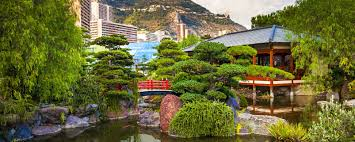
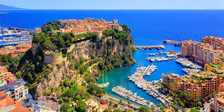
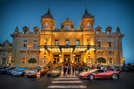
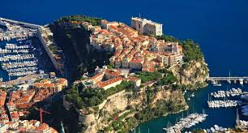
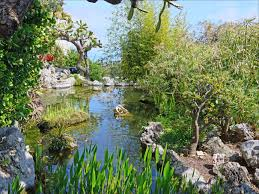
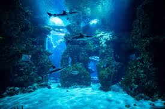

Monaco est une principauté située le long de la mer Méditerranée, sur la Côte d'Azur, à mi-chemin entre Nice et la frontière italienne. Monaco est le deuxième plus petit État indépendant au monde, après le Vatican. Son territoire s’étend sur une bande de terre de 4 100 m le long de la mer Méditerranée et sa largeur varie de 350 m à 1 050 m, pour une superficie totale de 202 hectares (2 km2). L’altitude maximale de 164 m est atteinte sur un des flancs du mont Agel, qui culmine à 1 150 m. La place du Palais se trouve à 62 m. La plage aménagée sur la nouvelle digue. La principauté compte 5 469 m de frontière avec la France (dont :1 341 m avec Cap-d'Ail, 390 m avec La Turbie, 3 274 m avec la commune de Beausoleil et 464 m avec Roquebrune-Cap-Martin), ainsi que 3 829 m de côte (port et plage)45. Au cours des dernières années, des grands travaux ont permis à Monaco de s’étendre de près de 40 hectares,
ENVIRONEMENT VERTUEUX
 ENDROIT A VISITER

casino de monte carlo
Depuis 1863, les casinos ont façonné Monaco et bâti sa légende. Si Monaco est aujourd'hui la destination incontournable pour les plus grands joueurs comme pour le grand public , la plus belle et la plus luxueuse, c'est parce que ses casinos ne cessent de se réinventer. Entre tradition et innovation. La plus belle façon de découvrir Monaco... Tout commence sur la place du Casino, lieu mythique de la Principauté. Ici, la vie pétille, l'effervescence est presque palpable. Sur la place, le Casino de Monte-Carlo, véritable emblème du grand luxe du jeu. À quelques pas seulement, le Casino Café de Paris, vértable paradis des machines à sous et de l'innovation. Et, le Sun Casino, le "petit Vegas" à quelques encâblures, enfin, le Monte-Carlo Bay Casino, niché au cœur d'un Resort de rêve... Des jeux, et bien plus encore... Si Monaco plaît autant, c'est parce que la destination se réinvente depuis le fin du XIXe siècle. La Principauté est pleine de vie et les curieux venus du monde entier peuvent s'adonner aux activités les plus amusantes.
le rocher
Monaco-Ville est l'un des 11 quartiers de la Principauté de Monaco. C'est la partie la plus ancienne de la Cité-État, que l'on appelle aussi LE ROCHER. Ce quartier regroupe la plupart des institutions politiques du pays: le Palais Princier, le Gouvernement, le Conseil national (parlement de Monaco), La Mairie, le Conseil communal, les tribunaux. On y trouve aussi de nombreux musées, dont le célebre Musée Océanographique de Monaco. Pour profiter ce magnifique quartier, vous devez laisser votre voiture dans un des nombreux parkings à étages, puis effectuer la visite à pied ou confortablement installés dans les petits trains ou mini-bus prévus à cet effet. » À NE PAS MANQUER Une promenade dans la vieille ville s'impose aux visiteurs. Avec ses anciennes demeures "Renaissance" parfaitement entretenues, ses dédales de vieilles ruelles etroites, ses superbes boutiques et commerces.
le jardin exotique
Le Jardin Exotique de Monaco a su rester unique en son genre depuis son ouverture au public en 1933. Il rassemble en plein air, dans un cadre prestigieux , une grande variété de plantes dites "succulentes". Construit à flanc de falaise le Jardin Exotique offre une vue imprenable à couper le souffle sur la Principauté de Monaco et propose de découvrir des plantes succulentes aux formes extravagantes dont les cactées (ou cactus) constituent la famille la plus représentative. Les végétaux acclimatés dans ce Jardin sont originaires de plusieurs zones sèches lointaines (d'où le terme "exotique") : sud-ouest des Etats-Unis, Mexique, Amérique centrale et du sud pour les cactées et les agaves ; Afrique du sud, orientale et péninsule arabique pour les autres succulentes. Les plantes produisent régulièrement des fleurs afin de se reproduire. Ces floraisons s'échelonnent toute l'année en fonction du lieu d'origine de chaque espèce : hiver pour les Aloe et les Crassula africains, printemps et été pour la plupart des cactées. Contrairement à une idée largement répandue seule une petite partie des cactus fleurit de nuit.
Musée oceanografique
Le Musée océanographique de Monaco, souvent abrégé en « Musée océanographique », est un musée de la mer fondé en 1889 par le Prince Albert Ier de Monaco et inauguré en 1910, basé sur le Rocher de Monaco sur la Côte d'Azur. Il est l'un des bâtiments les plus imposants du Rocher avec le palais de Monaco, le seul à être à flanc de falaise et à descendre jusqu'à la mer, 85 m plus bas. Aujourd’hui, il est constitué de 90 bassins et sa collection est riche de 350 espèces de poissons, pour plus de 6 000 spécimens1.monaco est connus aussi pour ses voiture luxieux